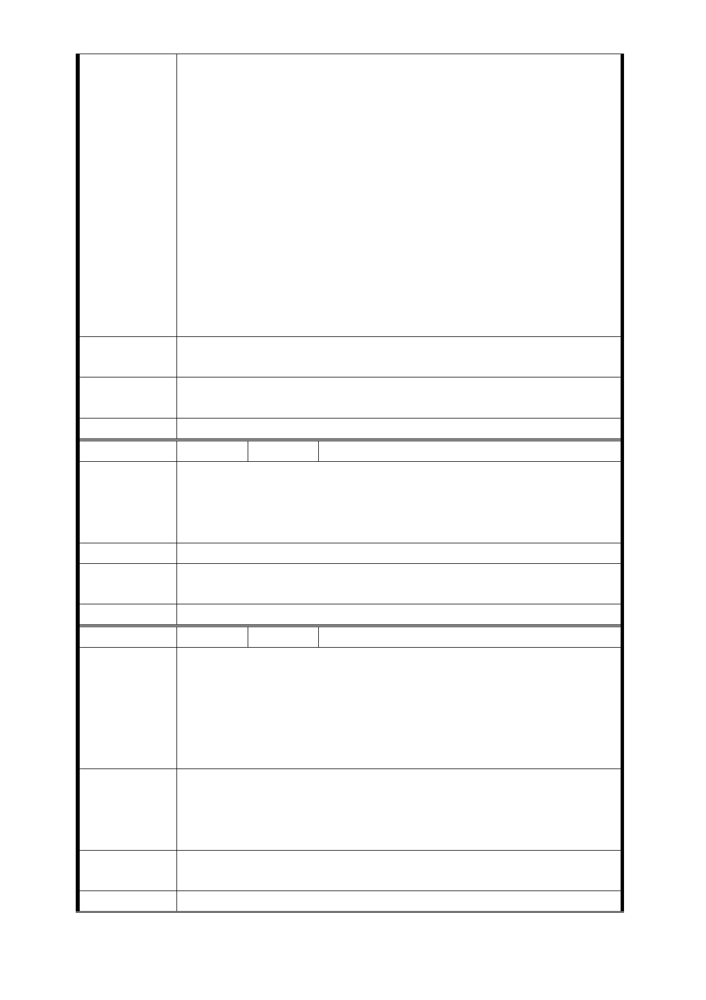

反對捷五聯合開發案
我們是捷運萬大線 LG 然北側出口站附近的住戶，由於絕大
多數居民反對捷五聯合開發案，我要提供替代方案給委員們
參考。
座號：莒光段 1 小段地號 813 基地約 200 坪
座落於：台北市西藏路萬大路口（圓山套房）整楝
陳情理由
因為這楝大樓（圓山套房），發生過火災，使用狀況不佳。地
主及住戶改建意願非常強烈，如果可以專案處理，1 坪可以
換 1 坪，地主願意，讓 LG03 北側出口站及通風井，設在此基
地，相信比起拆掉 3148 平方公尺，大面積的房子，所引起的
民怨與抗爭，會簡單順利多了。
也請捷運局儘早尋求替代方案，結束 LG03 北側居民房子要被
拆掉的噩夢，因為我們真的已經受到驚嚇了，請快點讓我們
恢復平靜的生活。
建議辦法
將捷運共構案設在 813 號地號：西藏路及萬大路口圓山套房
，改建成捷運共構宅。
市府回應
意見
同編號捷五－1 回應意見。
委員會決議 同編號交一－1 委員會決議。
編 號 捷五-38 陳情人 李黃○王
屋齡才 26 年，沒有迫切改建需求，除非權狀一坪換一坪加一
陳情理由
個車位（郝市長說的），拆遷補償太微薄，反對徵收原地主土
地的權利。
縮小捷運出入口。
建 議 辦 法 修法之後再談
市府回應
意見
同編號捷五－1 回應意見。
委員會決議 同編號交一－1 委員會決議。
編 號 捷五-39 陳情人 吳○偉等 2 人
我是萬大華園住戶，我們的住宅建物結構堅固，環境清幽，
屋齡才 23 年，不需要迫切「都更」。我家 32.48 坪，勉強可
陳情理由
以二代同堂，共享家庭和樂。政府官員舉辦聯合開發的原地
主才可以換回半間房子。我嚴重的請求都市計畫委員們能以
同理心，聽我們的訴求並為我們主持正義。
我要維持房屋現況。
我不要參加聯合開發和被強制徵收房屋。希望政府把捷運出
建議辦法
口移至別處或縮小涵蓋範圍（我們萬大華園和萬大路 85 巷的
原地主的房屋在萬華區都算屋況很好），懇請都市計畫委員們
能主持公道。不勝感激。
市府回應
意見
同編號捷五－1 回應意見。
委員會決議 同編號交一－1 委員會決議。
- 78 -